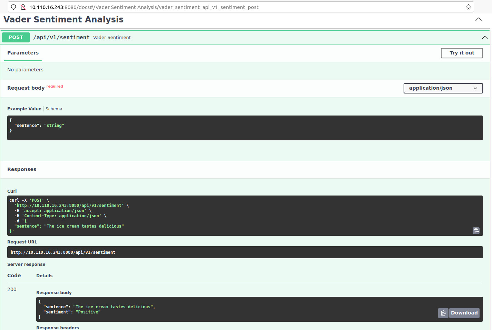

In this article we will build a Python FastAPI application with a single API which will return the sentiment (Postivie, Negative or Neutral) of the text given as input using Vader Sentiment Analysis. We will deploy the service in Kubernetes locally using minikube. If you are new to FastAPI please refer here. If you want to install minikube refer here.
Note: Installing minikube is out-of-scope of this article.
Build Sentiment service API
This application contains a single API which will return the sentiment of the text provided as input. The other API we have is to check the health of the application. You can download the complete source code of this application from my Github repo. Run the following commands to execute the application locally:
$ git clone https://github.com/saisyam/vader-sentiment-service.git
$ cd vader-sentiment-service
$ python3 -m venv .venv --prompt ss
$ source .venv/bin/activate
$ pip install pip --upgrade
$ pip install -r requirements.txt
$ uvicorn service.main:app --reload
Go to http://127.0.0.1:8000/docs to see the Swagger API and try the sentiment API.

Build the Docker in minikube
There are multiple ways to push the docker image into minikube. Refer this link for more information. I have used the first one Pushing directly to the in-cluster Docker daemon (docker-env). It worked for me. I built my docker images as:
$ cd vader-sentiment-service
$ docker build -t vader-sentiment .
The docker image build directly in to minikube.
Run our application
Now it’s time to create deployment and service to run our docker in minikube. We will keep it simple for this article. Will explore more options on scaling the application in future articles. The api.yaml file in the Github repo contain service and deployment template.
Service template
# vader-sentiment LoadBalancer Service
# Enables the pods in a deployment to be accessible from outside the cluster
apiVersion: v1
kind: Service
metadata:
name: vader-sentiment-svc
spec:
selector:
app: vader-sentiment
ports:
- protocol: "TCP"
port: 8080
targetPort: 8080
type: LoadBalancer
Deployment template - we will have only one replica for now.
# vader-sentiment Deployment
# Defines the deployment of the app running in a pod on any worker node
apiVersion: apps/v1
kind: Deployment
metadata:
name: vader-sentiment
labels:
app: vader-sentiment
spec:
replicas: 1
selector:
matchLabels:
app: vader-sentiment
template:
metadata:
labels:
app: vader-sentiment
spec:
containers:
- name: vader-sentiment
image: vader-sentiment:latest
ports:
- containerPort: 8080
imagePullPolicy: IfNotPresent
Use the below command to deploy service:
$ kubectl apply -f api.yaml
service/vader-sentiment-svc created
deployment.apps/vader-sentiment created
$ kubectl get pods
NAME READY STATUS RESTARTS AGE
vader-sentiment-8f5bfc566-wk9p9 1/1 Running 0 2s
Make sure you have the status running as shown above. Now we want the public IP so that we can test our API. Run the following command to get it:
$ kubectl get svc vader-sentiment-svc
NAME TYPE CLUSTER-IP EXTERNAL-IP PORT(S) AGE
vader-sentiment-svc LoadBalancer 10.110.16.243 <pending> 8080:30498/TCP 25s
The EXTERNAL-IP is showing as <pending>. Open another terminal and run the command:
$ minikube tunnel
Status:
machine: minikube
pid: 1612721
route: 10.96.0.0/12 -> 192.168.49.2
minikube: Running
services: [vader-sentiment-svc]
errors:
minikube: no errors
router: no errors
loadbalancer emulator: no errors
Now again run the get svc command:
$ kubectl get svc vader-sentiment-svc
NAME TYPE CLUSTER-IP EXTERNAL-IP PORT(S) AGE
vader-sentiment-svc LoadBalancer 10.110.16.243 10.110.16.243 8080:30498/TCP 22m
Now you see the EXTERNAL-IP. Ofcourse, the CLUSTER-IP and EXTERNAL-IP are same as we are running Kubernetes locally. Our application is deployed in minikube successfully.
Test our application
I use cURL command to test my APIs. You can use postman as well. To test the sentiment API use the following cURL command:
curl -X 'POST' \
'http://10.110.16.243:8080/api/v1/sentiment' \
-H 'accept: application/json' \
-H 'Content-Type: application/json' \
-d '{
"sentence": "The ice cream tastes delicious"
}'
You will get the following response:
{
"sentence": "The ice cream tastes delicious",
"sentiment": "Positive"
}
Conclusion
We have learnt how to deploy a simple service built with Python FastAPI into a Kubernetes (minikube) cluster using Docker. In future articles we will see how to deploy the same service on to public clouds like AWS, GCP and Azure. Thank you for reading.